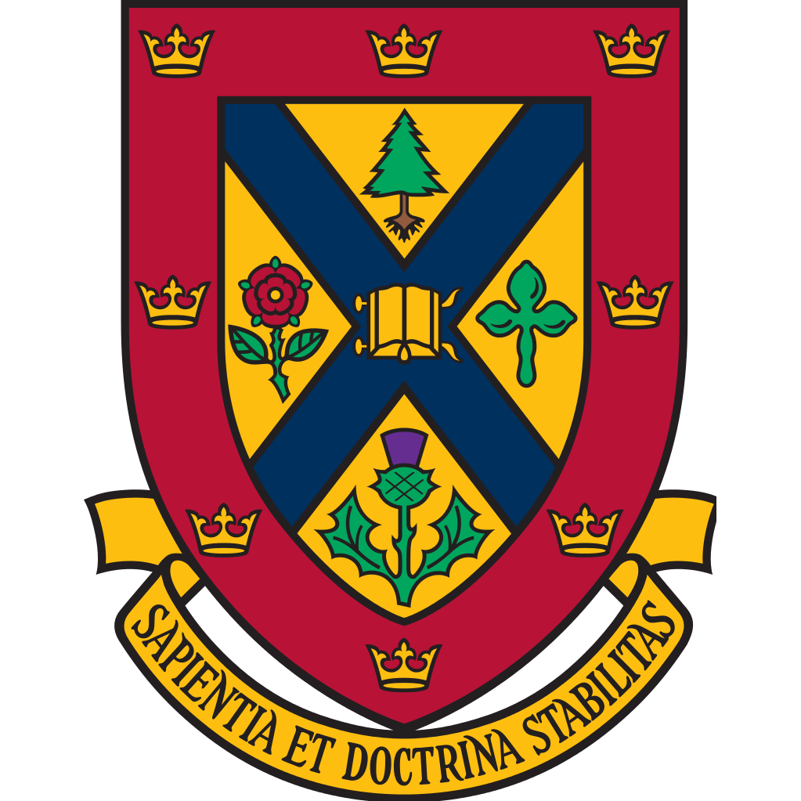
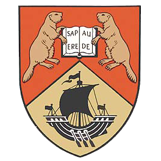

|
DR. MARTIN L. NICOLAI
If you wish to contact me, my e-mail is martin.nicolai@rogers.com
I was born in Montréal in 1961 and grew up in Montréal and Candiac, Québec, then Ottawa, Ontario. Later I resided in Saint-Cloud, a suburb of Paris, France, from 1971 to 1975 and Düsseldorf-Kaiserswerth, Germany, from 1975 to 1979, graduating from the International School of Düsseldorf, where I received the History Prize in 1979. My father worked for the Royal Bank of Canada, retiring as Vice President, International Trade, Corporate Banking.
I then attended the University of New Brunswick from 1979 to 1984, graduating with a Bachelor of Arts First Class Honours in History. Although I began doing a Bachelor of Science in Forestry, intending to specialize in Forest Management, after a year and a half I decided to major in history and minor in English, and took courses in French, German, Spanish studies, classics, economics, math, physics, biology, chemistry, geology, and forestry. I received the Chester Martin Prize in History and Harry Velensky Prize in 1982, the Imperial Order of Daughters of the Empire Provincial Chapter Prize in History (British and Commonwealth) in 1983, and the Cyrus and Ann Eaton Prize in American Studies (American Literature and American History) in 1984, as well as being on the Dean’s List, Faculty of Arts, in 1982, 1983, and 1984.
For post-graduate studies I attended Queen’s University in Kingston, Ontario, where I graduated with a Master of Arts in History in 1986; my thesis supervisor was Dr. George A. Rawlyk. During this time I received a Social Sciences and Humanities Research Council Special M.A. Scholarship in 1984-1985, an Ontario Graduate Scholarship in 1985-1986, and the James Robertson Carruthers Memorial Prize in History for my M.A. thesis in 1987.
Continuing on in the Department of History at Queen’s University for my Ph.D., I graduated in 1992; my dissertation was supervised by Dr. George A. Rawlyk and Dr. James S. Pritchard, with special assistance from Dr. James A. Leith. I did my comprehensive exams in 1987 in the fields of French Colonial America, British Colonial America and the American Revolution, and Ancien Régime France and the French Revolution. I also went to Paris in the summers of 1986 and 1987 to do research at the Archives nationales (Hôtel de Soubise), Bibliothèque nationale de France (Site Richelieu), and Service historique de l’armée de terre (Château de Vincennes). During this time I received Social Science and Humanities Research Council Doctoral Fellowships in 1986-1987, 1987-1988, and 1988-1989. I also taught numerous courses as a Teaching Assistant from 1985 to 1987, Instructor from 1987 to 1992, and after my graduation as an Adjunct Assistant Professor from 1992 to 1994. I taught History 121, “The Intellectual Origins of the Contemporary West”, History 122, “Modern World History”, History 260, “Canada from the Conquest to the Present” (which I also taught in French one year), History 261, “French Canada”, History 350, “French Canada During the Old Regime”, and History 443, “Comparative Colonial North American Development”.
Having married and encountered an extremely poor academic job market for historians in the early 1990s, in 1994-1995 I did a Bachelor of Education degree at the University of Toronto, with my teachable subjects being intermediate/senior history and English, also qualifying in English as a Second Language Part 1 in 1995. I taught English, English as a Second Language, and math to adults at the York Learning Centre in Newmarket, Ontario, from 1995 to 1996, history, English, French, politics, law, geography, and math at a private school named York College in Newmarket and Markham, Ontario, from 1995 to 1998, and history, French, law, and geography at another private school named Town Centre Montessori Private Schools in Markham, Ontario, from 1998 to 1999. I was then hired as a French immersion history teacher at Aurora High School in Aurora, Ontario, starting in September 1999, and am still teaching there. I have taught Grade 10 “Canadian History Since World War One” and “Histoire du Canada depuis la Première Guerre mondiale”, Grade 10 “Civics” and “Éducation à la citoyenneté”, Grade 11 “World History to the End of the Fifteenth Century”, Grade 11 “Introduction to Anthropology, Psychology and Sociology” and “Introduction à la psychologie, à la sociologie et à l’anthropologie”, Grade 12 “World History Since the Sixteenth Century”, Grade 12 “Canada: History, Identity, and Culture”, and Grade 12 Challenge and Change in Society”, as well as English as a Second Language Level D and English as a Second Language Level E. I live in Keswick, Ontario, with my wife and three children.
|